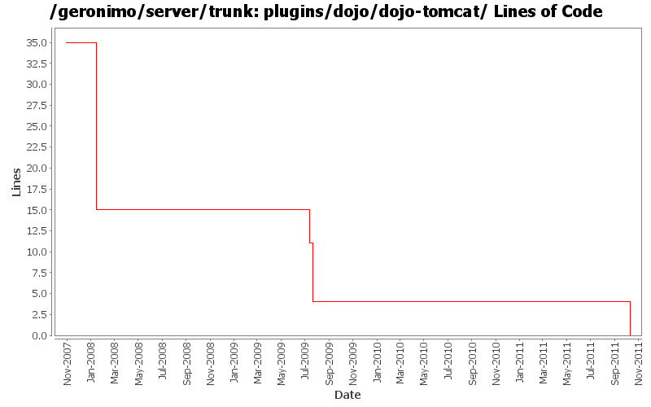

[root]/plugins/dojo/dojo-tomcat
 src
(0 files, 0 lines)
src
(0 files, 0 lines)
 main
(0 files, 0 lines)
main
(0 files, 0 lines)
 appended-resources
(0 files, 0 lines)
appended-resources
(0 files, 0 lines)
 META-INF
(0 files, 0 lines)
META-INF
(0 files, 0 lines)
 history
(0 files, 0 lines)
history
(0 files, 0 lines)
 plan
(0 files, 0 lines)
plan
(0 files, 0 lines)

| Author | Changes | Lines of Code | Lines per Change |
|---|---|---|---|
| Totals | 21 (100.0%) | 31 (100.0%) | 1.4 |
| jaydm | 1 (4.8%) | 11 (35.5%) | 11.0 |
| jdillon | 2 (9.5%) | 7 (22.6%) | 3.5 |
| rwonly | 5 (23.8%) | 4 (12.9%) | 0.8 |
| djencks | 5 (23.8%) | 4 (12.9%) | 0.8 |
| rickmcguire | 2 (9.5%) | 2 (6.5%) | 1.0 |
| genspring | 1 (4.8%) | 2 (6.5%) | 2.0 |
| kevan | 3 (14.3%) | 1 (3.2%) | 0.3 |
| prasad | 2 (9.5%) | 0 (0.0%) | 0.0 |
remove dojo plugin, we never use it.
0 lines of code changed in 3 files:
upgrade dojo to 1.5.0
2 lines of code changed in 1 file:
[maven-release-plugin] prepare release 3.0-M2
1 lines of code changed in 1 file:
[maven-release-plugin] prepare branch 3.0-M2
1 lines of code changed in 1 file:
GERONIMO-5290 fix many of the deprecation warnings from maven 3
2 lines of code changed in 1 file:
GERONIMO-5193 Upgrade DOJO from 1.3.2 to 1.4.2 in 22 branch and trunk.
2 lines of code changed in 1 file:
GERONIMO-4980 Try to finish some more of the tomcat6 to tomcat7 upgrade
1 lines of code changed in 1 file:
GERONIMO-4888 Update the version of dojo-war dependency to 1.3.2
2 lines of code changed in 1 file:
GERONIMO-4655 upgrade version to 3.0-SNAPSHOT, make a few things more consistent
1 lines of code changed in 1 file:
GERONIMO-4737 Move resources that need filtering into filtered-resources directories. Mostly patch from shawn jiang, thanks
0 lines of code changed in 1 file:
GERONIMO-2732: Committed the changes to switch to the published
Dojo artifacts.
11 lines of code changed in 1 file:
Update LICENSE and NOTICE files. Merge from 2.1 branch
0 lines of code changed in 2 files:
upgrade trunk to 2.2-SNAPSHOT
1 lines of code changed in 1 file:
(GERONIMO-3747) Fixed parentage of module groups, though most still need to have their modules put into the proper groupId
Updated groupId of *everything* under framework/** to org.apache.geronimo.framework, and did my best to update all references
6 lines of code changed in 1 file:
(GERONIMO-3771) Moved maven-plugins/* to buildsupport/*, updated groupId to org.apache.geronimo.buildsupport
1 lines of code changed in 1 file:
GERONIMO-3698. Eliminate abuse of plugin prerequisites that makes installing dependencies unduely difficult
0 lines of code changed in 1 file:
* GERONIMO-3565
0 lines of code changed in 2 files: